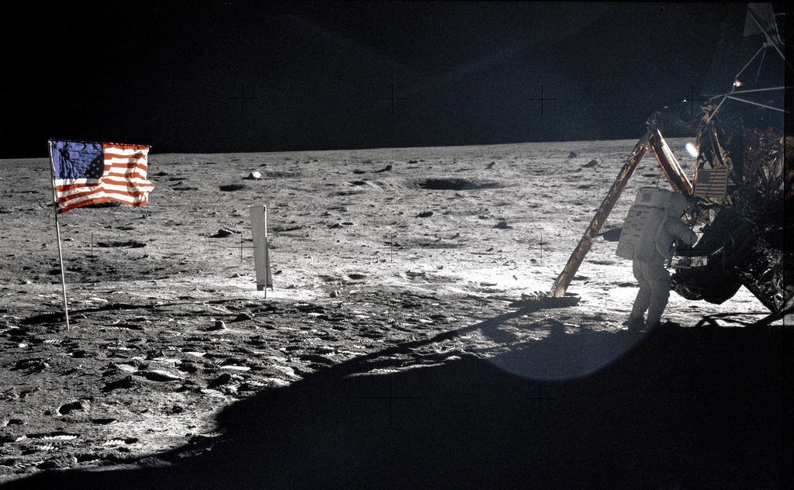

The US Moon Landing
The Popular Opinion
On July 20th 1969, The United States Of America became the first country to have humans on the moon. The first humans on the moon were Neil Armstrong and Edwin Aldrin. From NASA's headquarters in Huston, Texas, the astronauts launched into space with the famous Apollo 11. The mission was approximately 8 days long and the journey to the moon took around 3 days.
When the crew finally touched the moon's surface, Armstrong famously stated: "That's one small step for man, one giant leap for mankind". The astronauts went through rigorous training to prepare them for this moment. This event is one of the greatest human achievements ever, as it displays the pinnacle of human intelligence and planning.
The moon landing was very important to all Americans especially since they were behind the Russians in spatial technology. This was also during the Cold War so tensions were higher than ever.

Possible Theories
Faked And Filmed In A Film studio
Ever since the moon landing, a popular theory related to it was the possibility that the moon landing was faked and filmed in a film studio. This theory claims that the entire moon landing was faked and that it was instead directed by Stanly Kubrick with all the astronauts being actors. Conspiracy theorists claim that the moon landing was faked for numerous reasons: NASA wanted to avoid humiliation and continue to obtain funding (Nasa raised about US $30 billion) or the Americans wanted to win the moon race out of the need for prestige. However, the most popular possible motive for faking the moon landing was to distract the world from the Vietnam War as the end of the war and the completion of crew landings occurred around the same time.
They Got Lucky
In 1958, a couple years before the famous landing, The Van Allen radiation belt was discovered. The Van Allen radiation belt is a zone of energeticly charged particles that surrounds a planet. Earth has two of these belts. These belts give off extreme radiation making it extremely risky to pass through, some even think it's not possible for humans to go through it. Theorists came to the conclusion that if its not possible then it didn't happen. The theory states that because the earth is surrounded by this belt that it was never possible for humans to pass through therefore there is something that NASA is hiding (perhaps secret advanced technology capable of getting past the belts) or they never passed through them. The opinion of professionals who believe that the astronauts wouldn't survive the belt state was that they just got lucky; this would explain why there have been no new recent trips to the moon since.

Are These Theories Plausible
The first theory has several motives to support it but I still have a hard time believing that it was filmed for several more reasons. The fact that the footprints are still visible to satellites on the moon (since there is no wind) is hard evidence that humans were there. Let's say that the photos that the satellites took were altered, it is still unlikely but still theoretically possible. Another important point to take note of was the large quantity of scientific equipment brought used such as lunar seismometers and lunar laser ranging retroreflector array. These instruments are for reading seismic activity and for calculating the distance from the moon to the earth with high precision.
The second theory is possible as NASA may have potentially ignored the research done on these belts and became very fortunate to cross the belt. This could be the main reason we don't travel to the moon any longer. However, this theory is also improbable since NASA is made up of thousands of the smartest people in earth, making it extremely unlikely that no one would recognize this potentially deadly issue. If this theory turns out to be true then it would result in an international embarrassment.